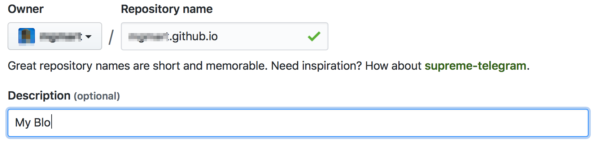
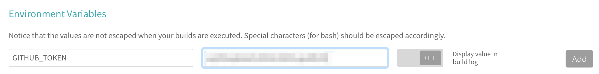

GitHub Pages is a nice addition to GitHub which allows you to publish a website without much effort.
As I looked around for guidance how to automate the deployment of a Hugo site to GitHub Pages I've only found rather complicated methods. Involving either local publishing with scripts which will publish the generated site to GitHub. Or automated setups which consists of scripts which do git commits over ssh.
I went for the automated GitHub Pages deployment with Wercker in the first step. I did later realise that it is too complicated (at least for me) to change the steps involved. For example I wanted not to hard-wire the theme in my repository and went for a git submodule approach. Which was not supported by the Wercker Hugo-steps which are available.
I summarise the steps which are needed to allow an automated deployment to GitHub pages using Travis CI.
Create the local repository
In the first step we create a git repository locally.
mkdir "My Fantastic Blog"
cd My\ Fantastic \Blog
git initWhich would be acknowledged by git with something like:
Initialized empty Git repository in ~/Documents/repo/My Fantastic Blog/.git/You now have a local git repository where you can build up your site.
Select a theme and install it
There are a bunch of nice themes available. Choose one and install it.
As an example we select the nice Hugo Icarus theme. We are using the git
submodule approach, this allows us to use always the latest theme version for
the automated deployment.
git submodule add https://github.com/digitalcraftsman/hugo-icarus-theme.git themes/hugo-icarus-themeWe then ignore the now created themes directory and stage the changes we've
made so far.
git add .gitmodules
git add themes/hugo-icarus-theme
git commit -m "theme is added"Providing some content
For the sake of this example we now simulate some content by copying the exampleSite
content to our site.
cp -R themes/hugo-icarus-theme/exampleSite/* .and make some changes to config.toml
baseurl = "https://GITHUB_USERNAME.github.io"Where GITHUB_USERNAME is your GitHub username.
themesDir = "themes/"At this point you should be able to serve the site locally by starting the Hugo server.
hugo serverYou can view the site at http://localhost:1313
If everything went fine so far you can commit your changes once again.
git add .
git commit -m "Some example content is added"Create the GitHub repository
At GitHub choose New Repository and name it with GITHUB_USERNAME.github.io.
Please exchange GITHUB_USERNAME with your actual GitHub username.

After you've pressed create you see some information displayed.
Copy the part listed under …or push an existing repository from the command
line which looks like:
git checkout -b deploy
git remote add origin git@github.com:GITHUB_USERNAME/GITHUB_USERNAME.github.io.git
git push -u origin deployand execute this using your shell. You should now see your repository on GitHub filled with content.
Deployment Automation
We'll use Travis CI to build our site and deploy it afterwards to
the master branch of our repository.
To allow Travis CI access to our repository we need to create a personal access token, which is used in the repository settings.

The process of setting up GitHub Pages deployment is nicely described in the Travis CI documentation.
The following travis.yml works nicely with Hugo.
sudo: required
python:
- "2.7"
# Clean and don't fail
install:
- sudo pip install pygments
- wget -O /tmp/hugo.deb https://github.com/gohugoio/hugo/releases/download/v0.24.1/hugo_0.24.1_Linux-64bit.deb
- sudo dpkg -i /tmp/hugo.deb
- rm -rf public || exit 0
# Build the website
script:
- pygmentize -V
- git submodule update --init --recursive
- hugo -v
# Deploy to GitHub pages
deploy:
provider: pages
skip_cleanup: true
local_dir: public
target-branch: master
github_token: $GITHUB_TOKEN # Set in travis-ci.org dashboard
on:
branch: deployAfter adding travis.yml to the root directory of our site we commit and push
our changes to GitHub.
git add .travis.yaml
git commit -m "Travis CI configuration is added"
git push -u origin masterAfter a while Travis CI should recognise that there was a recent push to the repository and it should start to build your site with Hugo and deploy it afterwards. This should now happen each time you make changes to your repository at GitHub.